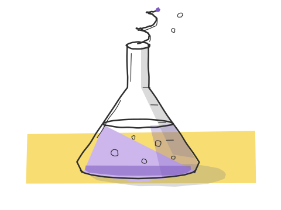

folding@home and boinc

when my home server has cpu to spare, i give it to volunteer computing. folding@home simulates how proteins move and fold, for research into diseases like cancer and alzheimer's. boinc runs work for world community grid and milkyway@home. i switch it on and off by hand, so some weeks it runs every night and some weeks it doesn't run at all.
live numbers
- status
- these numbers load from folding@home's public stats, which needs javascript. the rows below are what's true without it.
- folding@home
- donor dharun.dak, on 8 threads.
- points
- shown when folding@home has credited a work unit.
- work units
- counted once folding@home credits the first one. folding started 12 november 2026.
- rank
- not ranked yet.
- boinc
- world community grid and milkyway@home, on 8 threads, through science united. it has no public per-person page, so boinc credit lives on the server's own dashboard for now.
how it's set up
- where
- one container on the proxmox ve host, with 16 threads and 4 gb of memory. it doesn't start at boot; i turn it on when i want it.
- priority
- the lowest the host has: nice 19, the idle scheduler and the smallest cpu weight. d's labs and everything else always win, and science gets what's left.
- split
- 8 threads for folding@home, 8 for boinc. boinc may use half the memory and 8 gb of disk.
- one command
- on, off, status, or finish: finish lets the current work units complete, then switches off, so nothing is thrown away.
- backups
- none, on purpose. work units are throwaway and the identity is saved separately, so the container can be rebuilt from its script.
- network
- it can reach the projects' servers, but not the rest of my home network apart from shipping its logs. nothing in it is reachable from the internet.
keeping the power stage cool
the weak point on this board is the power stage around the cpu, not the cpu. in a load test, 15 cores of science pulled 89 watts at the cpu package and the power stage settled at 62 degrees. a check on the host runs every 30 seconds: if the power stage stays above 85 degrees for two minutes, it shuts the science container down and sends a notification to my phone. i'm two thousand kilometres away, so it has to look after itself.
what it counts
a small program on the server keeps lifetime totals that survive the container being off: energy used (the cpu package's power times the container's share of the busy cores, so the wall draw is higher), cpu core-hours, hours switched on, and every on-to-off session. it also checks folding@home's public stats every half hour. the totals go to grafana, next to the rest of the server's monitoring.
questions
does it slow the server down?
not noticeably. science runs at the lowest priority on the machine, so anything else that wants the cpu gets it first. what it does cost is power and heat, which is why it's on demand.
why both folding@home and boinc?
folding@home is one project with one goal. boinc is a platform for many projects; science united picks them for me by topic. running both splits the cpu between biology and astronomy.
can i do this at home?
yes. install the folding@home client, or sign up with science united for boinc. on a desktop, set it to run only when the computer is idle.